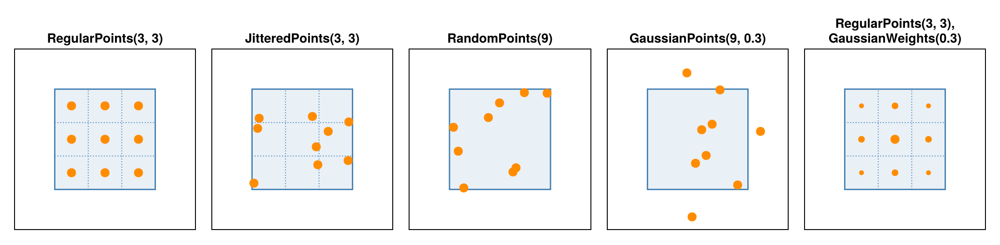

Several Rays per Cell
This page explains what a projector computes on a MultiRay geometry, how the rays are placed and weighted, where the random positions come from, and how it is implemented. Use Several Rays per Cell shows how to use it.
using CTOperatorspoints_figure (generic function with 1 method)What is computed
A ray-driven projector such as Siddon's Method or Joseph's Method treats a detector cell as a point: one ray from the source to the center of the cell. When the cells are large compared to the voxels, the back projection of such rays has gaps (Miao 2013, p. 29). A real cell integrates over its area. MultiRay(geometry, points; weights) replaces the one ray by K rays per cell, ending at the offsets given by points, and averages their line integrals:
\[y_i = \sum_{k=1}^K \frac{w_{ik}}{\sum_l w_{il}} \int_{\text{ray } (i, k)} x\]
The back projection is the exact adjoint: every ray adds its share $w_{ik} / \sum_l w_{il}$ of $y_i$. Miao (2013) calls the integral over the area of a ray path the "area integral" model; the rays of a cell sample such an integral.
The weights average line integrals, which keeps the operator linear. A detector averages intensities, $\exp(-\int x)$, which for a cell that sees an edge of the object is not the same (the partial-volume effect); modeling that would make the operator nonlinear.
Positions on the detector
Positions are counted in cells: cell (iu, iv) has its center at (iu, iv) and its edges at half-integers. Every detector geometry knows the ray that ends at any position (CTOperators.cell_ray): on a flat detector a point on the plane, on an arc detector a point on the cylinder around the source at the angle that belongs to the position, on a parallel-beam detector a line through that point. So the rays of a cell sample its actual shape, also on curved detectors.
The point strategies give the offsets of the rays from the cell center, where ±1/2 are the cell edges; some go beyond them. The weighting strategies give a weight for every offset. In the figure the blue square is one cell, the dotted lines its subcells, and the orange points the rays, with the marker area relative to the largest weight in the panel:

- Regular points sit at the centers of
su × svsubcells: the midpoint rule for the integral over the cell, a sum at equal distances. - Jittered points move each regular point to a random position within its subcell ("jittered sampling", Cook 1986, also called stratified sampling). They keep the even spread, and neighboring cells do not share the same pattern.
- Random points are spread anywhere in the cell, so their mean differs from the average over the cell by a random amount. Use Several Rays per Cell shows an example with 4 rays per cell.
- Gaussian points are normally distributed around the cell center, and all rays count equally: the distribution of the positions is the weighting. Points may land outside the cell, which models blur across neighboring cells.
- Given points (
Points) are the same in every cell and may lie outside it. - Gaussian weights describe a similar response with fixed positions: the points stay where they are, and the rays near the edges count less.
For images with one layer of voxels along z (2D images, or 3D images with nz = 1) the projectors keep all rays in the image plane: the offsets along v are set to 0, and strategies with several subcells along v are rejected. Joseph's method interpolates across the layer, so a ray away from its center is weighted down, and a tilted ray may leave the layer.
Random positions without a random number generator
The random positions must be the same in the forward and in the back projection, in every call and on every device: otherwise the back projection would not be the adjoint of the forward projection, and an iterative solver would see a different matrix in every iteration. A random number generator with state cannot give that in parallel kernels. Instead the positions are computed from the indices with a hash function, as GPU renderers do: pcg4d of Jarzynski and Olano (2020) maps four numbers, here the detector cell, the view, the number of the ray in the cell and the seed, to four numbers that look independent even for neighboring inputs; two of them give the offsets.
The view is numbered as in the full scan: subset(op, views) keeps these numbers, so the rays of a subset are those of the same views of the full operator, as ordered-subset methods require. A different seed gives a different, again fixed, set of positions: MultiRay(geometry, JitteredPoints(4, 1; seed=2)).
Implementation
- The number of rays per cell
Kis a type parameter of the point strategy. The loop over the rays of a cell has a length known to the compiler. WithK = 1the projector was as fast as on the plain geometry in our benchmark (128³ on a GPU, see below). - The kernels are those of the plain projectors: each thread handles one data element. For a
MultiRayit traces theKrays one after the other and adds them up (forward), or first sums the weights and then lets every ray add its share (back). No memory per ray is needed. - The time is about
Ktimes that of one ray; jittered offsets and Gaussian weights added nothing measurable on a GPU (see the benchmarks). - The ray mask applies per data element (a masked element skips all its rays), the clipping to the bounding box of the image mask per ray.
- A
MultiRayhas no single ray per data element. A projector that traces only one ray per cell fails with aMethodErrorforraywhen applied, instead of silently ignoring the other rays.
References
- R. L. Cook, "Stochastic sampling in computer graphics", ACM Transactions on Graphics 5(1), 51–72, 1986.
- M. Jarzynski, M. Olano, "Hash functions for GPU rendering", Journal of Computer Graphics Techniques 9(3), 21–38, 2020.
- C. Miao, "Comparative studies of different system models for iterative CT image reconstruction", master's thesis, Wake Forest University, 2013.
This page was generated using Literate.jl.